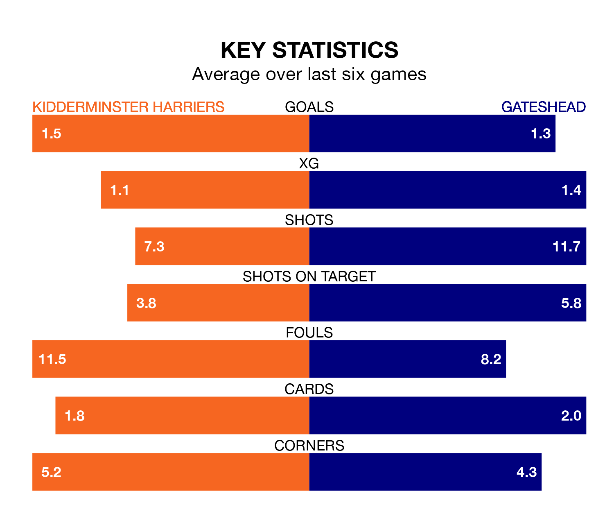

Gateshead are strong favourites to take all three points despite Kidderminster Harriers's home advantage in Tuesday's late match at the Aggborough Stadium.
*Betting Company* are offering odds of 2.0 on Gateshead sealing the win, with the visitors sitting eighth in the National League table.
Kidderminster Harriers, who are 23rd in the league and 17 points behind the Tynesiders, are priced at 3.1 to win. A draw is set at 3.4.
With 29 goals in 33 games so far this season, Kidderminster Harriers are the league's lowest scorers with 0.9 goals per game. But they are conceding fewer than average too, letting in 41 goals at a rate of 1.2 per game.
Gateshead, meanwhile, are above average scorers, with 1.9 goals per game, compared to a league average of 1.5. They have conceded 1.4 goals per game.
In the last 10 years, Kidderminster Harriers and Gateshead have played each other on 10 occasions. Kidderminster Harriers won two of them, Gateshead five, and they drew three times.
On average, Kiddy scored 0.7 goals and the Tynesiders 1.6 in those matches.
Their last meeting was on September 19, when Gateshead won 3-0 at home.
Kiddy are in good form in the National League, with four wins and a draw from their last six games.
With three wins and a draw over that period, the Tynesiders's form is worse – they have taken 10 points from 18, compared to the home team's 13.
Kidderminster Harriers's last match was on Saturday, a 0-0 draw against Dorking Wanderers.
Gateshead beat Wealdstone 4-2 last time out, also on Saturday, with Kieron Evans, Louis Storey, Mamadou Jobe and Marcus Dinanga Nyamabu on the scoresheet.
Updated: 12:18 (UTC), 19/02/24